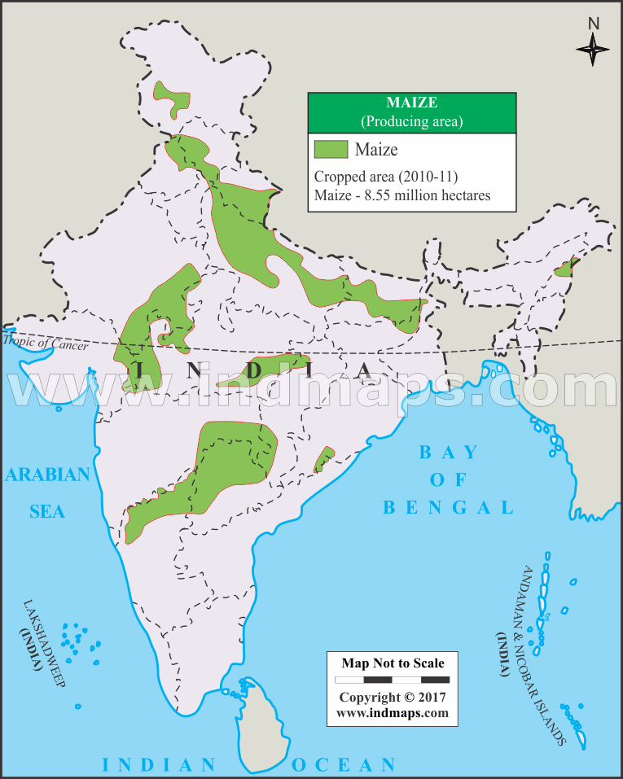

Maize (Zea mays L) is second rated grain that is used collectively in form of foodstuff or fodder. Globally, maize is known as queen of cereals because it has highest genetic yield potential among the cereals. Grains provides food items which are consumed in the form of starch, corn flakes also glucose. It is also used as animal feed in poultry. Maize can be cultivated in any soil as they require less fertile soil and various chemicals. Moreover, it fetch less ripening span, 3 months, in comparison to paddy, which takes 145 days. By growing maize, farmers can easily shield the deteriorating grade of soil , preserve 90% of water and 70% of potency as compared with paddy and can make more profit than wheat and paddy,” reported by vice chancellor, Punjab Agricultural University, Ludhiana. It serves as basic raw material to thousands of industrial products like oil, starch, alcoholic beverages etc. Uttar Pradesh, Rajasthan, Madhya Pradesh, Bihar, Himachal Pradesh, J & K and Punjab are Major Maize growing states. AP and Karnataka is major producer of maize in south. Show More Type of Crop: Kharif, Rabi Temperature-21°C - 27°C ,35°C (Max) Rainfall-50-100cm (Min),250-400cm (Max) Sowing Temperature-21°C to 27°C Harvesting Temperature-25-30°C Time of sowing-The crop is sown in the month of mid-October - November. Requires lot of water and hot weather to grow. land preparation-For cultivation selected land should be free from weeds and remains of previously grown crop. Plough the land to bring the soil to fine tilth. It may take 6 to 7 plough. Apply 4-6 tons/acre of well decomposed cow dung across the field, also apply 10 Azospirillum packets in field. Prepared furrow and ridges with 45 cm to 50cm spacing. Major Producers:Himachal Pradesh, Madhya Pradesh, Uttar Pradesh, Bihar, Maharashtra, Rajasthan, Tamil Nadu, Andhra Pradesh, Karnataka Highest Producer: karnatakaka 